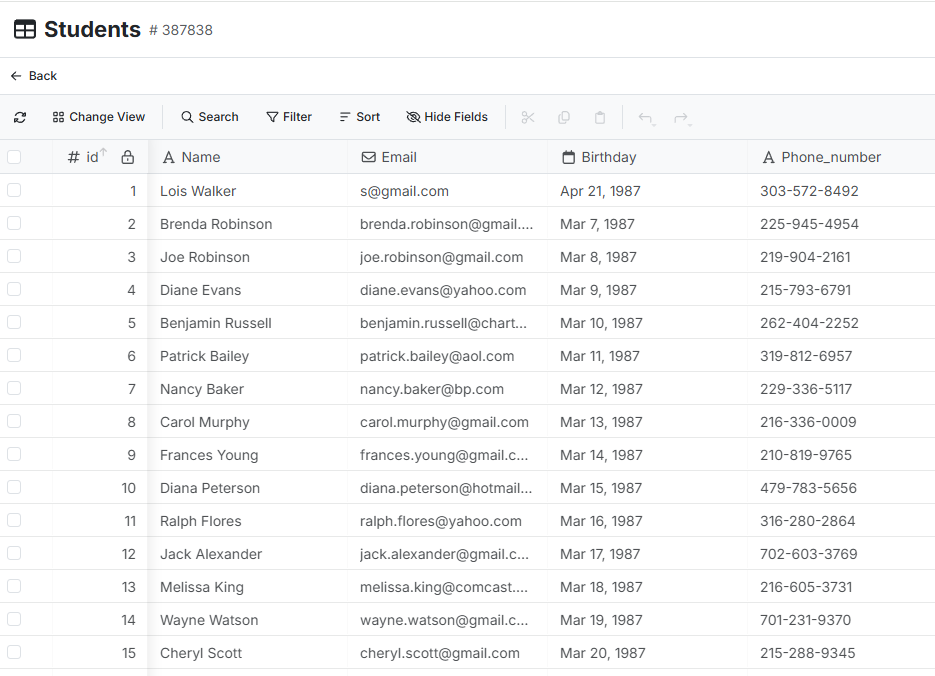
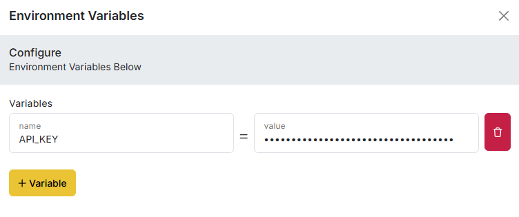
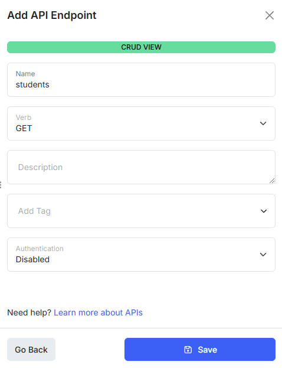
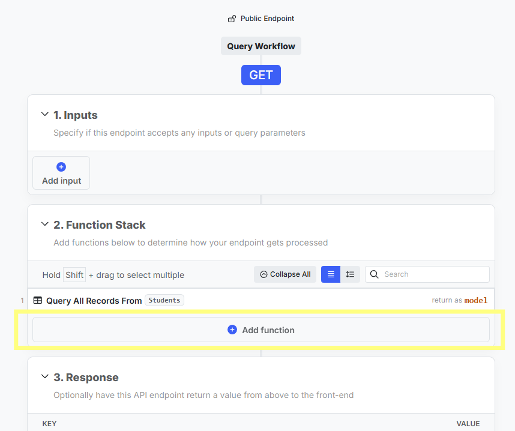
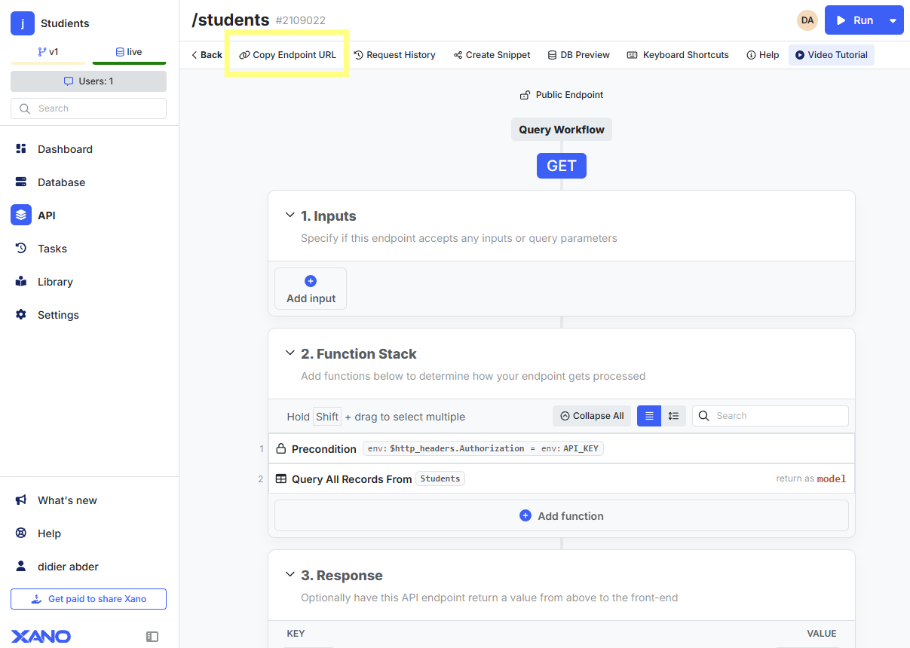
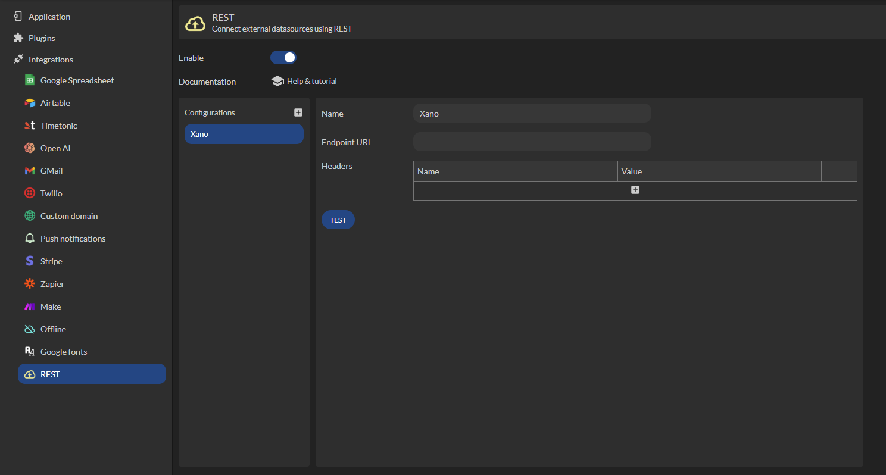
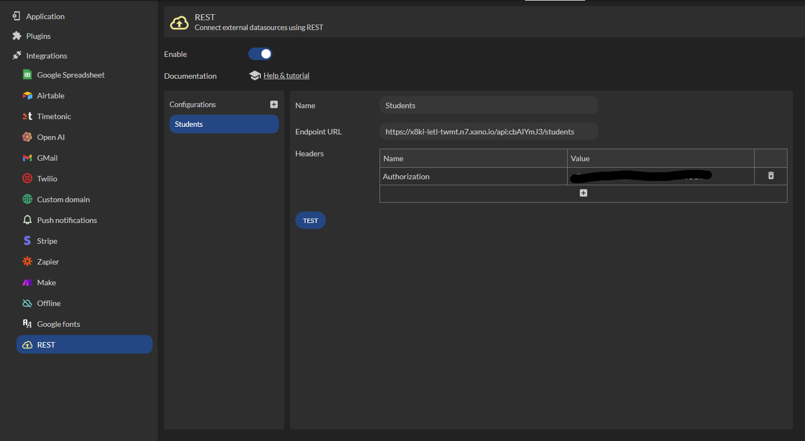
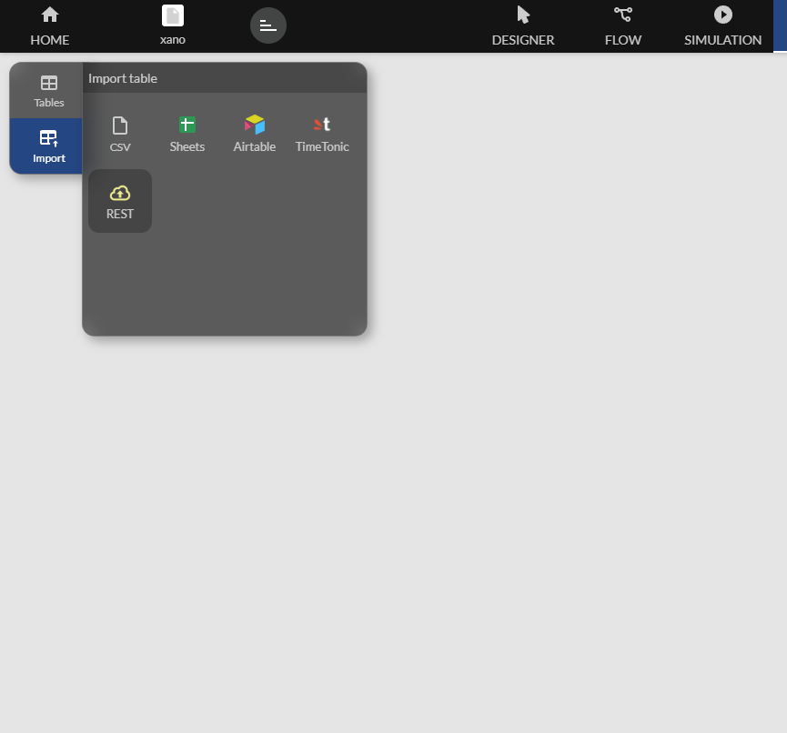
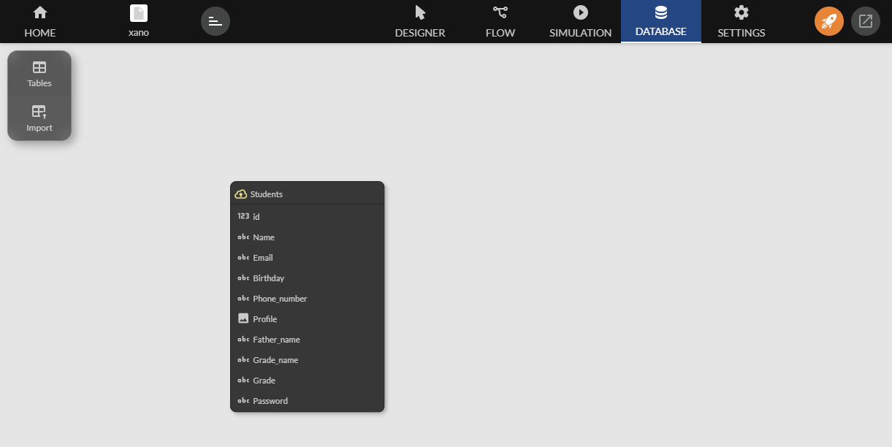
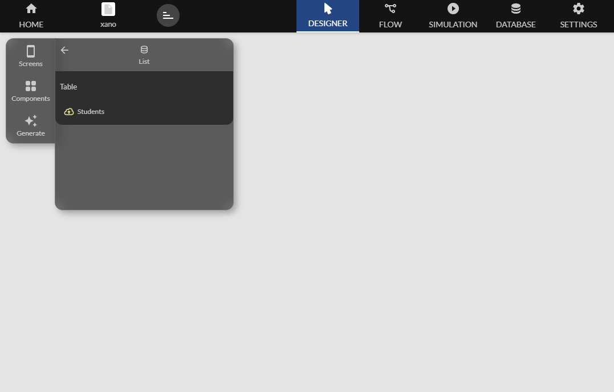

Xano
This documentation guides you through the necessary steps to integrate Xano.
Available from the Enterprise plan
You will learn how to configure Xano and use its tables to power your applications.
Xano is a backend platform that allows you to create, manage, and leverage a database with powerful APIs. When paired with Zyllio, Xano provides a robust solution for creating efficient and complex applications.
Configure Xano
Table Configuration
In the Database section, create your tables according to the needs of your application. For example, a Students table.

API Configuration
Access the Settings section of your workspace, then Manage.

Then, create a variable called API_KEY as follows.

You can set the key value as you wish. It is often recommended to use a key in the form of a complex alphanumeric string for added security. For example: a1b2c3d4-e5f6-7890-gh12-ijklmnop3456
Configure Endpoints
To access Xano data from Zyllio, it is necessary to create 4 endpoints in Xano.
If your application does not perform any modification operations, you can only set the endpoint type to GET.
Here are the steps applicable to the 4 endpoints.

Add an endpoint.

Select CRUD database operations.

Select the table.

Select one of the endpoint types and click on Save.

Secure Your Endpoints
Open the details of the endpoint to be secured, and click the Add function button.

Click on Add function.

Select Utility Functions.

Select Precondition.

Click on Add Condition and input the following parameters.
Remember to publish your endpoint and copy its URL for the following steps.

Using Xano Tables in Zyllio
Once your application is created, select Settings then REST.

Click Enable to activate REST exchanges with other solutions such as Xano. Add a configuration called Xano, for example.

Specify the URL of the endpoint previously copied from the Xano interface and the API key defined in Xano. Example.

Import the Xano Table
From the Database tab, click import then REST.

Then select the Students endpoint and click Import.

You get a table where all the columns correspond to those in Xano.

Display the Xano Table
You can view and modify the content of the Xano table just like any table defined in your application. Let's use a List screen to display the Students table.

Then select the Students table.

You get: